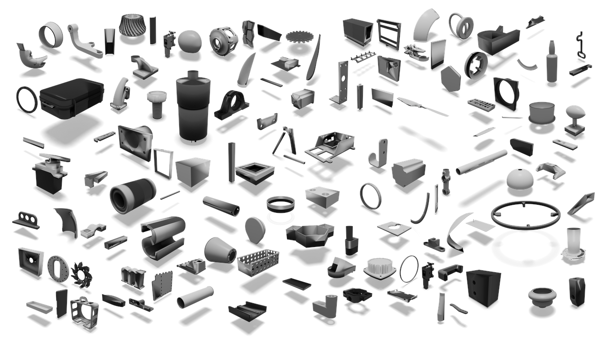
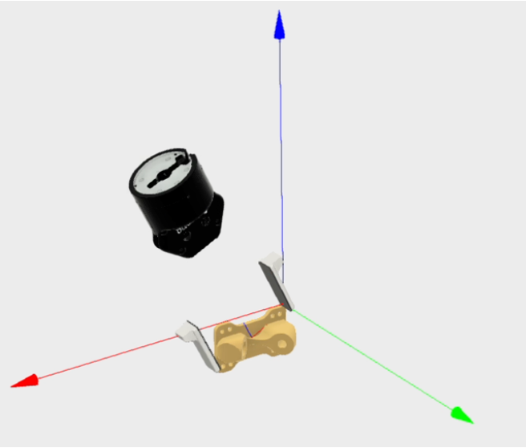
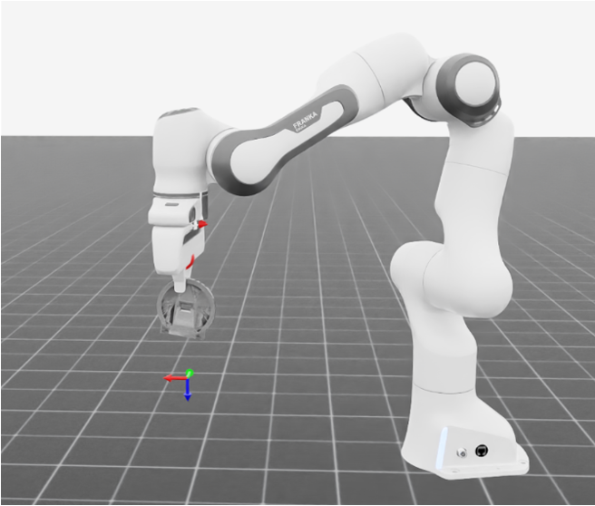
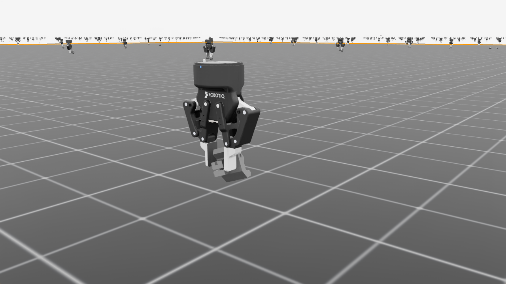
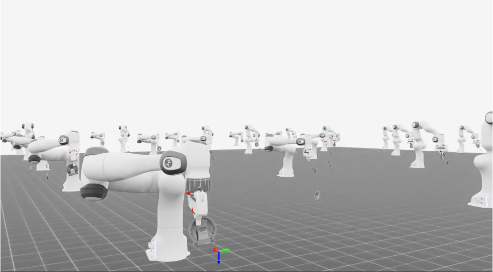
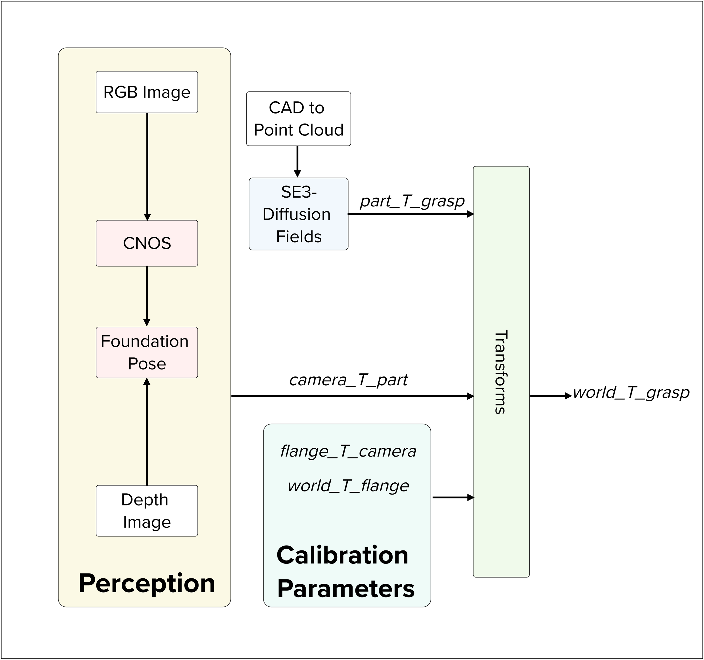

We introduce GraspFactory, an object-centric grasp dataset containing over 109 million two-fingered, 6-DoF grasps, collectively for the Franka Panda (with 14,690 objects) and Robotiq 2F85 grippers (with 33,710 objects). GraspFactory is designed for training data-intensive models. We demonstrate the generalization capabilities of the SE(3)-DiffusionFields model trained on the Franka Panda subset of GraspFactory, in both simulated and real-world settings. To the best of our knowledge, this is the largest object-centric grasping dataset containing 6-DoF, two-finger grasps for geometrically diverse 3D data.
| Gripper | # of Objects | # of Good Grasps |
|---|---|---|
| Franka Panda | 14,690 | 12.2 million |
| Robotiq 2F-85 | 33,710 | 97.1 million |
Example objects from the dataset along with their successful grasps (only 25 shown) for the Robotiq 2F-85 gripper. Use your mouse or touch to rotate, zoom, and pan the scene. Green markers indicate successful grasps.
Our dataset generation begins with a large collection of CAD models sourced from the ABC dataset [1]. We selected 33,710 objects for the Robotiq 2F-85 gripper and 14,690 objects for the Franka Panda gripper. Candidate grasps are sampled on each object using an antipodal sampling method, where surface points and normals are used to determine potential finger contact locations. To increase coverage, we also apply mesh decimation, preserving the underlying shape while creating additional graspable surfaces. Any grasp resulting in a collision with the object geometry is discarded.
From the remaining non-colliding candidates, a diverse subset of grasps is selected using Agglomerative Hierarchical Clustering in SE(3) space. This method allows us to capture complex cluster structures without predefining the number of clusters. Each chosen grasp is then tested in the Isaac Sim physics simulator. For the Franka Panda gripper, 2,000 grasps per object are evaluated, while 5,000 grasps per object are evaluated for the Robotiq 2F-85 gripper. The robot moves to each grasp pose, closes its fingers, and executes a set of pre-defined motions to verify that the object remains securely held under perturbations.
Grasps that remain stable during simulation are considered feasible or successful. In total, this procedure generates 109.3 million validated grasp samples across all objects and grippers, producing a comprehensive and diverse dataset ideal for training models that generalize to novel objects and gripper configurations.




Simulation environments for evaluating collision checks, sampled grasp execution, and physics-based evaluation.
We trained the point cloud-based model proposed in SE(3)-DiffusionFields [2] using the Franka Panda Hand subset of GraspFactory (Ours) and the ACRONYM [3] datasets. Training was conducted on two NVIDIA RTX-4090 GPUs with a batch size of 4 for 2,900 epochs, spanning a total of 19 days. We focused on the Franka Panda subset to align with the ACRONYM dataset, which also contains grasps specific to the Franka Panda gripper. SE(3)-DiffusionFields has been shown to outperform other grasp generative models in capturing and generating diverse grasps. We adopted the same learning rate scheduler as described in prior work. Our training set contained 12,903 objects, with 1,434 objects reserved for validation and 353 objects held out for testing.
We evaluate real-world feasibility to evaluate whether grasps generated by the model trained on GraspFactory can be used reliably to pick up an object without colliding with the object or the surrounding objects, such as the table. We also evaluate grasp robustness measures the consistency of a grasp across repeated trials, highlighting its ability to maintain performance under minor uncertainty introduced by perception.

@misc{graspfactory2025,
author = {Srinidhi Kalgundi Srinivas and Yash Shukla and Adam Arnold and Sachin Chitta},
title = {GraspFactory: A Large Object-Centric Grasping Dataset},
howpublished = {CoRL Workshop 2025},
note = {Non-archived workshop, URL: \url{https://sites.google.com/stanford.edu/corldata25/home}},
year = {2025}
}
[1] Koch, S., Matveev, A., Jiang, Z., Williams, F., Artemov, A., Burnaev, E., Alexa, M., Zorin, D., & Panozzo, D. (2019). ABC: A big CAD model dataset for geometric deep learning. In Proceedings of the IEEE/CVF Conference on Computer Vision and Pattern Recognition (pp. 9601-9611).
[2] Urain, J., Funk, N., Peters, J., & Chalvatzaki, G. (2022). SE(3)-DiffusionFields: Learning smooth cost functions for joint grasp and motion optimization through diffusion. arXiv preprint arXiv:2209.03855.
[3] Eppner, C., Mousavian, A., & Fox, D. (2021, May). ACRONYM: A large-scale grasp dataset based on simulation. In 2021 IEEE International Conference on Robotics and Automation (ICRA) (pp. 6222-6227).
[4] Nguyen, V. N., Groueix, T., Ponimatkin, G., Lepetit, V., & Hodan, T. (2023). CNOS: A strong baseline for cad-based novel object segmentation. In Proceedings of the IEEE/CVF International Conference on Computer Vision (pp. 2134-2140).
[5] Wen, B., Yang, W., Kautz, J., & Birchfield, S. (2024). FoundationPose: Unified 6d pose estimation and tracking of novel objects. In Proceedings of the IEEE/CVF Conference on Computer Vision and Pattern Recognition (pp. 17868-17879).